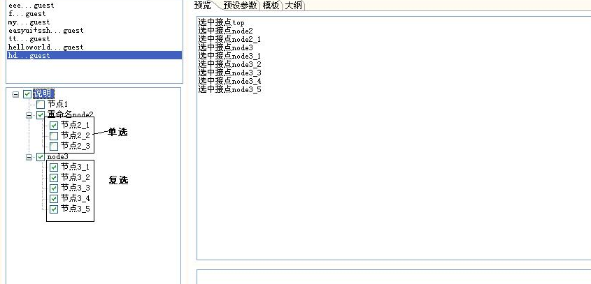

定义一个模板的结构,非必要标签，该标签一般放在模板的最前面， 标签内容是一个json串,包含在<ftl_head>{}</ftl_head>中,表示一个json对象.
ftl_head内的json格式比较简单，一个属性即代表一个树节点，树的节点都是复选框节点，简单写法如下。
比如:

复选框规律，选中一个复选框，会自动选中其父节点，在有些情况下，生成代码逻辑需要多选一(比如页面展现你要么是支撑分页效果展现，要么非分页效果展现)，按如下设置，可以让复选框更灵活。
1、key命名规则:
(r)表示单选框(可理解为radio),如下模板中"节点2_1,节点2_2,节点2_3"有相同的后缀，是一组单选框.
(c)表示多选框(可理解为checkbox),如下模板中"节点3_1,节点3_2,节点3_3"有相同的后缀，是一组复选框
2、复选框节点联带选择，即选中一个复选节点，连带选中某些相关的节点。
联动规律：
选中"节点3_1,节点3_2,节点3_3"中任意一个节点，都会自动选中"节点3_4,节点3_5",
选中"节点3_4"会自动选中"节点3_5",
即b(c)联动"_b(c),_b(c)联动__b(c),.....
3、将上内容保存到模板,选种任一java文件,右键->Easy Code 即弹出预览框可查看效果。
